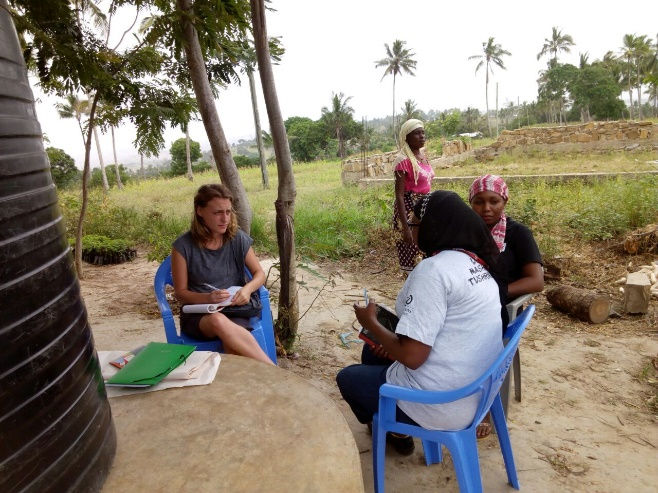

A Wonderful Experience in Miyani
I am a French researcher involved in an MSc Agricultural Development at the University of Copenhagen. I am very interested in Community Currency, especially regarding their potential to foster sustainable agriculture, food security and endogenous development in developing countries.
In this context, I am currently doing amazing fieldwork in the rural area of Miyani (near Mombasa, Kenya) where a community currency -the Miyani-Pesa (MP) (part of the Sarafu-Credit system)- has been launched last August. Grassroots Economics has, indeed, supported a local agricultural cooperative in (1) investing in a posho mill; (2) launching the MP (which is backed by the milling service) and an inital network of 40 local smallholders.
Objective: The main objective of my research was to examine the current and potential impacts of MP on the agricultural cooperative development, food security and local farmers livelihoods. Methods: (1) transect walk and mapping of the area (territorial resources analysis); (2) semi-structured interviews with 36 MP users regarding users’ characteristics; MP use, perceived benefits and challenges of the MP); (3) distribution of one hundred food consumption booklets among non-members and members (control and treatment) of the MP (comparison in terms of daily meals and daily food purchases); (4) semi-structured interviews with key informants (Red Cross, Green World Campaign, officials (interests, needs, challenges; perceptions about MP); (5) Workshops with members of the agricultural cooperative (objectives, operations, activities, history, partnerships, benefits and challenges); (6) Workshop and participatory training with the MP members (networking, further actions); (7) direct observation by living fifteen days with a local family and by participating to some activities at the cooperative.
Although the MP is still at an early development stage, 14 out of 36 interviewees mentioned that MP helps them on their daily food purchases by allowing them to buy food or mill their maize even when they experience a lack of Kenyan shillings. More astonishing, 60% of users noticed that they could already buy more diverse food thanks to the MP. Inital analysis of the food consumption booklets shows that in average, the non-users spend 23 Ksh per day per household member for food while the Miyani-pesa users spend 41 Ksh.This is an astonishing difference after only a few months!
Besides, 60% of interviewees also underlined that, by using MP, they could increase their savings in Kenyan Shillings. They would use the savings for paying the school fees, developing their farm and/or increasing their business stocks. For instance, one of the respondents underlined that he saved 300 Ksh (more than a weeks wage for him) since September and could, therefore, invest on his farm by buying one chicken.
Jacob, 44 years and father of 7 children, is both a farmer and a fisherman. Cooperative’s committee member, Jacob has been employed at the posho mill since February 2017. In addition of earning 100/150 Kenyan Shillingsper working day, he has daily received 50 MP (equal to 50 Kenyan Shillings) since last September. Jacob expressed his enthusiasm regarding MP (Sarafu-credit). At first, he mentioned that he could make more savings by using Sarafu-credit for his daily purchases. He would use the savings for paying for school fees while using the sarafu-credit for buying more food. He also underlined that he could buy more diverse food thanks to the Sarafu-credit. For instance, he buys more often wheat flour for making “chapatis” or rice and therefore, eats more than three times a week chapatis compared to once per week before; more than three times per week rice compared to twice per week before:
“I DON’T HAVE TO EAT UGALI EVERY DAY NOW. I COULD BUY MORE OFTEN RICE, BEANS, WHEAT FLOUR ETC.”
Besides, he underlined that his business as a fisherman has been supported: before, he received 2500 Ksh in a good day; now it earns 3700 Ksh in a good day because of more MP clients. Jacob finally underlined that he expects these benefits to be multiplied when there will be more users, as the program is only a few months old.
It is expected that these impacts would be fostered by scaling up the network of users.
On the other hand, while the MP orientates the local consumption of milling services toward the agricultural cooperative, the latter uses the received MP to support its operational costs by partially remunerating two of its employees at the posho mill in MP. The cooperative has also organized a tree planting event along which the participants were partially paid in MP. In the future, it is expected that the cooperative better systemizes the use of the MP by paying community services such as waste collection, tree planting, water-pound digging etc.
Finally, while the local use of MP is still challenged by it being so new and the size of the users’ network, there is a strong potential for fostering the local food security, the farmers’ living standards and the agricultural cooperative.
To conclude, I would like to point out that my fieldwork in Miyani is more than a research project: it is an incredible human experience. I could meet wonderful people who have so openly and nicely welcomed me, as if I was one of them. They allowed me to participate to their daily activities such as cooking, farming or fetching water; are always willing to help me for my research activities; and, the most important it is that we laugh and have fun together although we do not speak the same language! Besides, it is amazing for me that Grassroots Economics has put my research into actions and encouraged me express my theories and ideas for further development. More than that, GE has provided me with the keys to design and implement successful and innovative community currency schemes which have such a potential in terms of food security and sustainable endogenous development. I am now eager and ready to spread this model and thus, participate in “prospering economies built by thriving communities”!